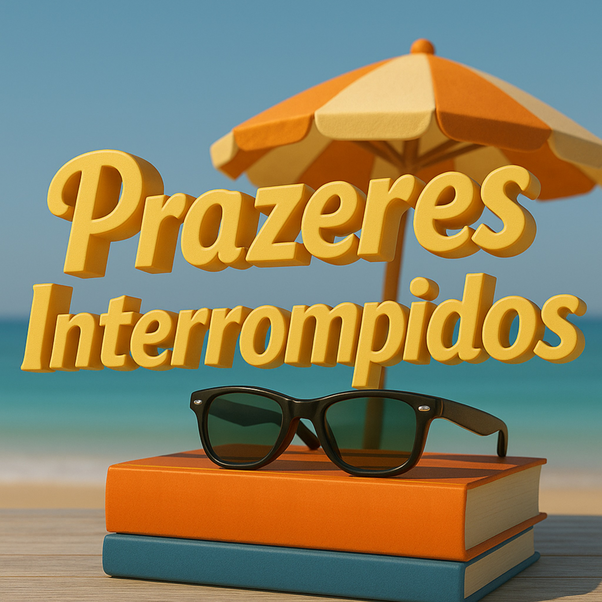

Projeto internacional de promoção da leitura, dos livros e dos escritores
O prazer de ler
vai contigo.
Instala a app e leva contigo os livros, os escritores e os projetos de leitura.

Começa por aqui
O que te apetece?
O universo Prazeres
Descobre os projetos
Estante VirtualExplora as obras dos escritores parceiros.
Museu VirtualUm espaço para ver, ouvir e descobrir livros.
Biblioteca UniversalLeituras gratuitas para descobrir.
Quiosque VirtualUma montra para o mundo literário.
Escritores parceirosConhece autores e as suas histórias.
Lista de ParceriasConhece os parceiros do projeto.
Equipa do podcastAs vozes que dão vida ao projeto.
Rádio PrazeresOuve a emissão e leva-a contigo.
O Mundo PodcastO projeto, como participar e os ouvintes pelo mundo.
Download para rádios parceirasDescarrega episódios para emissão nas rádios.
Serviços gratuitos para escritoresServiços gratuitos para os escritores parceiros.